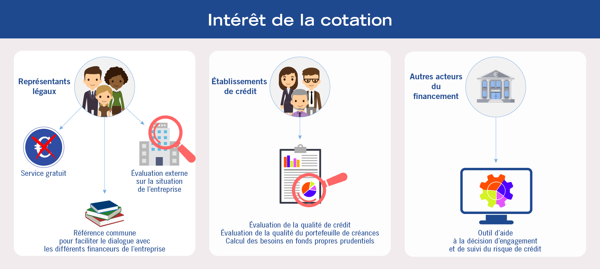
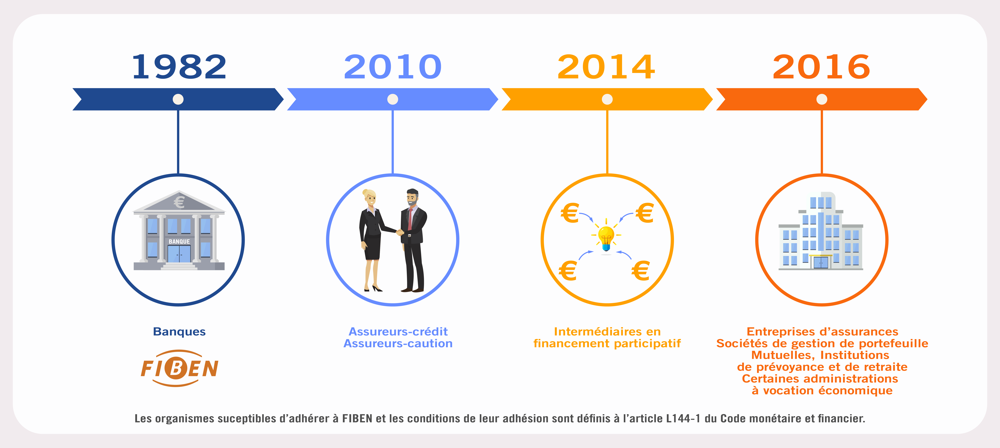
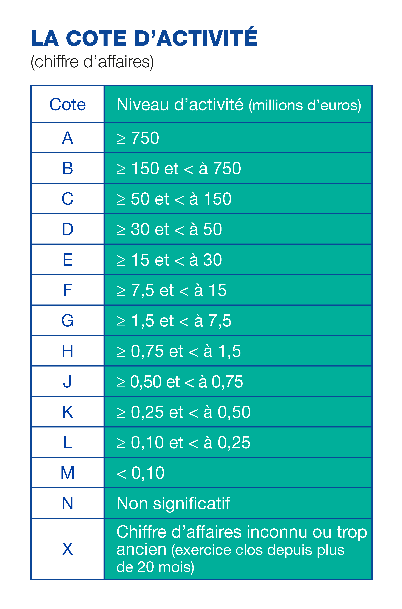
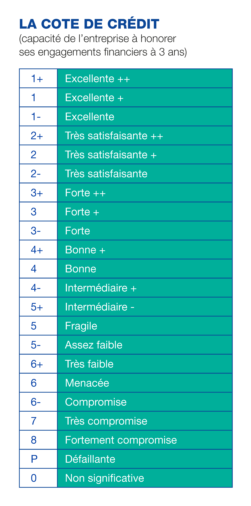
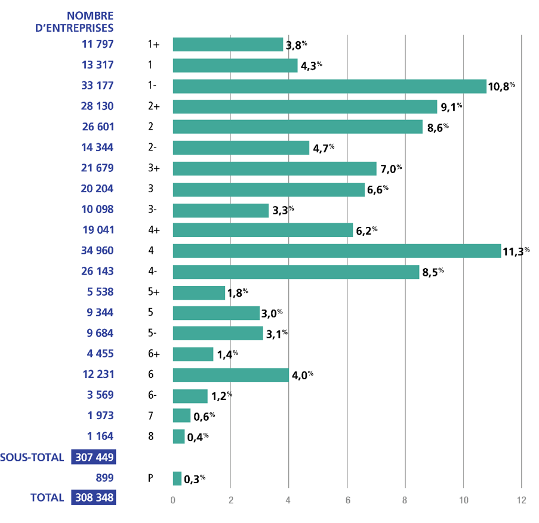

Cotation Banque de France
Quelle est l’intérêt de la cotation ?

Historique de Fiben

L’article L144-1 du Code Monétaire et Financier définit strictement les destinataires de la cotation.
Cotation ou notation
La cotation a le même objet que la notation d’une agence à savoir évaluer le risque encouru par un prêteur qui avance des fonds. le modèle économique de la cotation est très différent :
- l’activité de cotation ne concerne pas les produits financiers mais exclusivement l’appréciation du risque de crédit des entreprises non financières et résidentes. Les États et les collectivités territoriales ne reçoivent pas de cotation Banque de France ;
- la cotation n’est pas publique, le Code monétaire et financier définit strictement les destinataires potentiels de la cotation (Institutions financières essentiellement) ;
- la Banque de France ne perçoit aucune rémunération des entreprises analysées en contrepartie de la cote qu’elle leur attribue. La prestation de cotation est facturée aux seules institutions financières qui l’utilisent.
La cotation de la Banque de France est une appréciation sur la capacité d’une entreprise à honorer ses engagements financiers à un horizon de un à trois ans. La cotation est attribuée « à dire d’expert » à plus de 260 000 entreprises (dont près de 5000 groupes étudiés sur la base de leurs comptes consolidés). Cette cotation permet :
- une évaluation du risque de crédit d’une entreprise utilisée pour la politique monétaire et la réglementation prudentielle ;
- de faciliter le dialogue prêteur entreprise en mettant à disposition une référence commune et reconnue.
Que signifie « à dire d’expert » ?
C’est-à-dire à partir de l’analyse de la situation d’une entreprise par un analyste en application d’un ensemble de règles méthodologiques, communes à l’ensemble du réseau de la Banque de France. Ce mode d’attribution exclut le recours à des procédés de cotation totalement automatisés et/ou fondés exclusivement sur des données financières. Dans de nombreux cas, un entretien peut intervenir à l’initiative de la Banque de France, soit avant d’attribuer la cotation pour recueillir des éléments d’explication sur l’évolution de la situation financière.
Grille de cotation


Fondements juridiques
! à revoir !
La cotation Banque de France repose sur des fondements d’ordre national issus de l’article L.141-6 du code monétaire et financier et d’ordre international issus de la reconnaissance de la Banque de France en tant qu’OEEC (Organisme Externe d’Évaluation du Crédit), du statut « d’ICAS » (In-house Credit Assessment System) qui atteste que la Banque Centrale Européenne a validé son système d’évaluation du risque de crédit.
OEEC
La Banque de France est un Organisme Externe d’Évaluation du Crédit (OEEC)
Reconnue par la Commission Bancaire (devenue ACPR) depuis le 19 juin 2007. Ce qui permet aux établissements de crédit de s’appuyer sur son expertise pour calculer leurs besoins en fonds propres réglementaires.
Ce qui impose de respecter des critères de performance, sous la forme d’une vérification annuelle des taux de défauts cibles et les critères suivants :
- l’objectivité de la méthode de notation et des résultats
- l’indépendance du processus de production de la notation
- l’acceptation par le marché, c’est-à-dire que les évaluations de crédit d’un OEEC sont perçues comme crédibles et fiables par leurs utilisateurs.
ICAS
La Banque de France est reconnue In-house Credit Assessment System (ICAS).
La cotation des entreprises de la Banque de France est utilisée pour évaluer la qualité de la signature des créances apportées en garantie dans les opérations de refinancement monétaire et pour le refinancement des prêts bancaires dans le cadre de l’ECAF (Eurosystem Credit Assessment Framework). Les autres ICAS sont les systèmes d’évaluation des Banques Centrales d’Allemagne, d’Autriche, d’Espagne, de Belgique, d’Italie, du Portugal, de Slovénie.
La cotation prend notamment en compte :
- l’analyse des documents comptables sociaux et consolidés;
- l’examen des engagements financiers et d’éventuels incidents de paiement.
- l’environnement de l’entreprise : secteur d’activité, liens économiques et financiers avec d’autres entités, le cas échéant les événements judiciaires ou autres événements concernant l’entreprise et ses dirigeants, communiqués par les greffes de tribunaux de commerce ou les publications légales.
- Des éléments «qualitatifs», tels que, l’évolution du marché sur lequel elle opère, son positionnement sur ce marché, les relations avec ses clients et fournisseurs, la solidité de l’actionnariat, la stratégie de l’équipe dirigeante, les perspectives et projets à moyen terme, la flexibilité financière de l’entreprise, la transparence de la communication…
Les sources d’informations pour la cotation :
- Les entreprises,
- Les greffes des tribunaux de commerce,
- Les banques,
- Les acteurs du financement des entreprises,
- L’Insee.
Segmentation cotation
